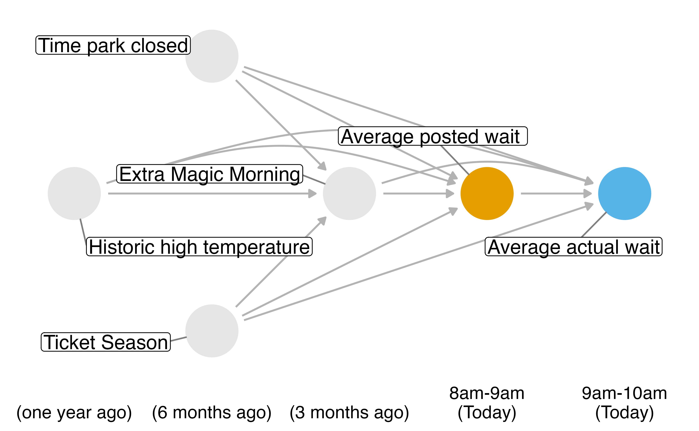
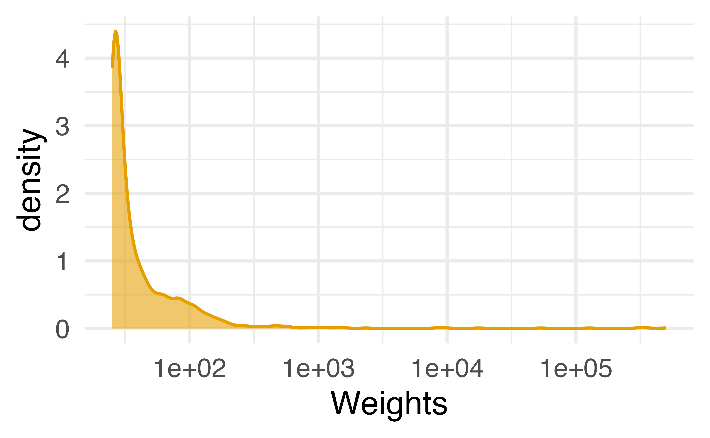
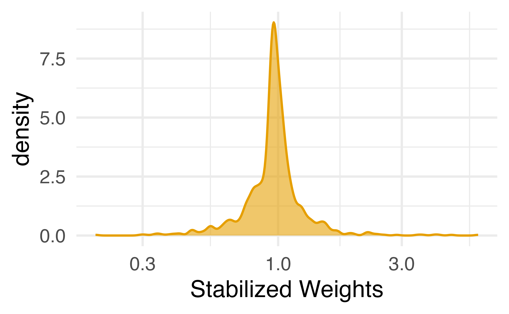
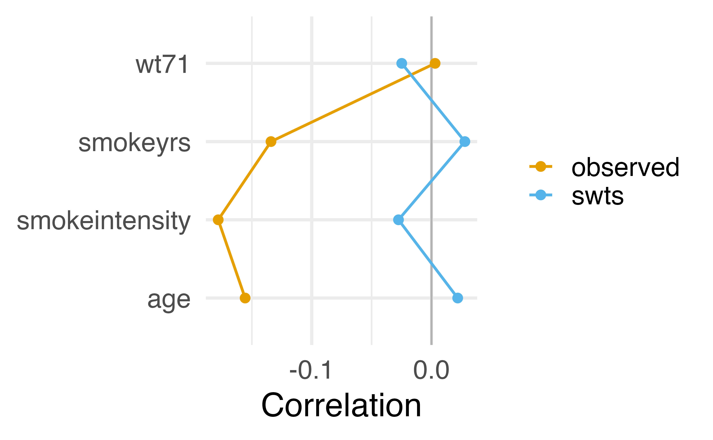
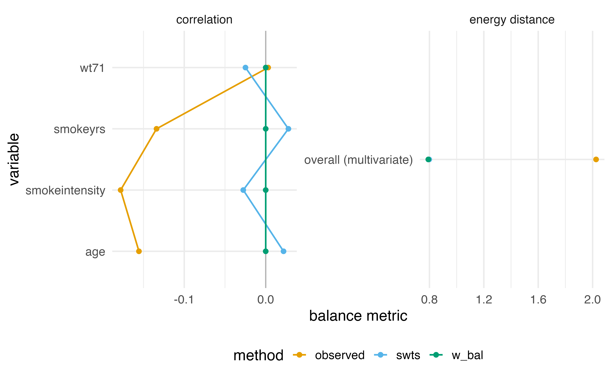
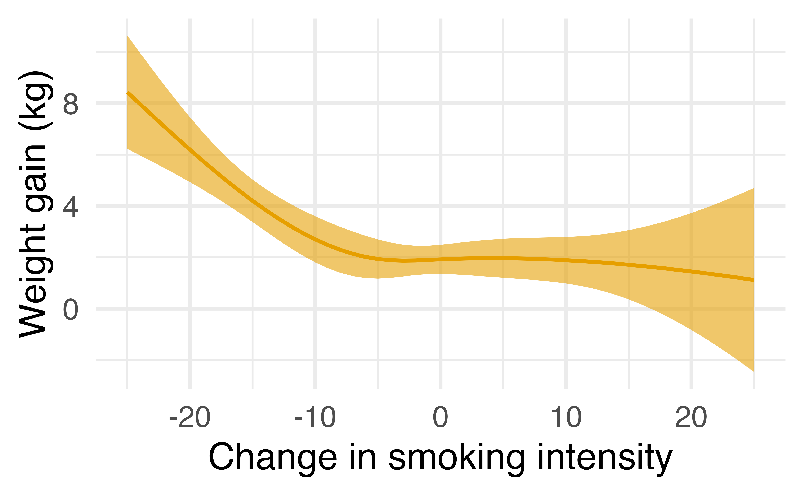
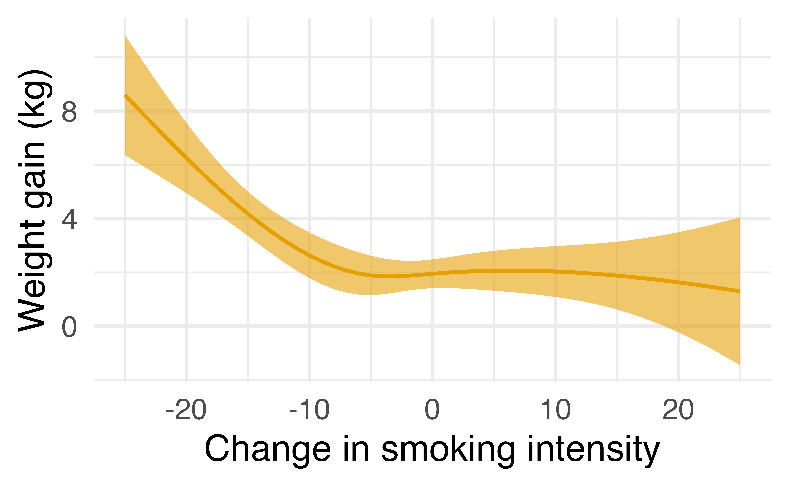
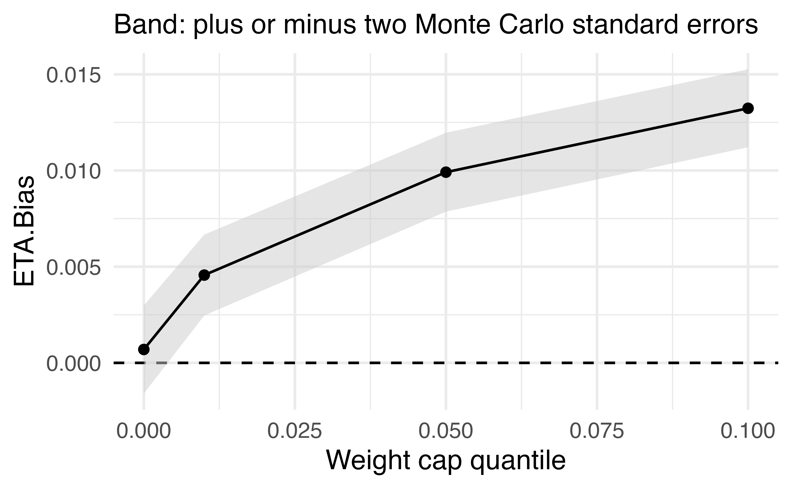

Stanford University
x ~ z, where z is all covariatesx on y weighted by the propensity scorelm(x ~ z) for the propensity score model.wt_ate() with .fitted; transforms using dnorm() to get on probability-like scale.exposure ~ confounderswt_ate()smkintensity82_71) affect weight gain among lighter smokers?exposure ~ confounderswt_ate()wt_ate()
lm() with wait_minutes_posted_avg as the outcome and the confounders identified in the DAG.augment() to add model predictions to the data framewt_ate(), calculate the weights using .fitted and wait_minutes_posted_avg
lm(x ~ 1)) or use mean and SD of xwt_ate(.., stabilize = TRUE) does this all!
check_edp() reports that as an effective number of observationscheck_balance()check_balance() expands categorical ones into indicator terms itselfwt_ate(), exposure_type tells check_balance() the exposure is continuouscheck_balance()# A tibble: 10 × 5
variable group_level method metric estimate
<chr> <chr> <chr> <chr> <dbl>
1 age smkintensity82_71 observed corre… -0.156
2 age smkintensity82_71 swts corre… 0.0219
3 smokeintensity smkintensity82_71 observed corre… -0.178
4 smokeintensity smkintensity82_71 swts corre… -0.0276
5 smokeyrs smkintensity82_71 observed corre… -0.134
6 smokeyrs smkintensity82_71 swts corre… 0.0279
7 wt71 smkintensity82_71 observed corre… 0.00301
8 wt71 smkintensity82_71 swts corre… -0.0248
9 <NA> <NA> observed energy 2.03
10 <NA> <NA> swts energy 0.798 
ipw() for standard errors that account for the weights# A tibble: 1 × 2
term estimate
<chr> <dbl>
1 smkintensity82_71 0.965ipw()ipw() uses a sandwich estimator that also accounts for the uncertainty in the propensity score modelipw()Inverse Probability Weight Estimator
Estimand: ATE
Effects: marginal (population-averaged)
Weight Estimator:
Call: lm(formula = smkintensity82_71 ~ sex + race + age + I(age^2) +
education + smokeintensity + I(smokeintensity^2) + smokeyrs +
I(smokeyrs^2) + exercise + active + wt71 + I(wt71^2), data = nhefs_light_smokers)
Outcome Model:
Call: lm(formula = wt82_71 ~ smkintensity82_71, data = nhefs_swts,
weights = swts)
Marginal estimates:
estimate std.err z ci.lower ci.upper conf.level p.value
slope -0.096497 0.036518 -2.6424 -0.16807 -0.024923 0.95 0.008231 **
---
Signif. codes: 0 '***' 0.001 '**' 0.01 '*' 0.05 '.' 0.1 ' ' 1ipw() to estimate the effect with standard errors that account for the weights, then as_conditional() to switch readings# A tibble: 1 × 2
term estimate
<chr> <dbl>
1 wait_minutes_posted_avg -2.91ipw() reports the effect of one more minute, so multiply by 10 to compareInverse Probability Weight Estimator
Estimand: ATE
Effects: marginal (population-averaged)
Weight Estimator:
Call: lm(formula = wait_minutes_posted_avg ~ park_close + park_extra_magic_morning +
park_temperature_high + park_ticket_season, data = wait_times)
Outcome Model:
Call: lm(formula = wait_minutes_actual_avg ~ wait_minutes_posted_avg,
data = wait_times_swts, weights = swts)
Marginal estimates:
estimate std.err z ci.lower ci.upper conf.level p.value
slope -0.29116 0.10991 -2.649 -0.50659 -0.075731 0.95 0.008074 **
---
Signif. codes: 0 '***' 0.001 '**' 0.01 '*' 0.05 '.' 0.1 ' ' 1# A tibble: 2 × 7
term estimate std.error statistic p.value conf.low
<chr> <dbl> <dbl> <dbl> <dbl> <dbl>
1 (Intercept) 44.9 4.51 9.95 2.41e-23 36.0
2 wait_minut… -0.291 0.110 -2.65 8.07e- 3 -0.507
# ℹ 1 more variable: conf.high <dbl>wt_ate(), we declare the exposure typebalance()balance()
── Entropy balancing ───────────────────────────────────────────────────────
Exposure: "smkintensity82_71" (continuous)
Estimand: "ate"
Observations: 1162
Solver: converged in 5 iterations
Constraints: 4 terms (tolerance 0)
Largest imbalance: 0.0000 (correlation)# A tibble: 15 × 4
variable method metric estimate
<chr> <chr> <chr> <dbl>
1 age observed correlation -1.56e- 1
2 age swts correlation 2.19e- 2
3 age w_bal correlation 3.77e-16
4 smokeintensity observed correlation -1.78e- 1
5 smokeintensity swts correlation -2.76e- 2
6 smokeintensity w_bal correlation 1.22e-16
7 smokeyrs observed correlation -1.34e- 1
8 smokeyrs swts correlation 2.79e- 2
9 smokeyrs w_bal correlation -8.16e-18
10 wt71 observed correlation 3.01e- 3
11 wt71 swts correlation -2.48e- 2
12 wt71 w_bal correlation -2.25e-16
13 <NA> observed energy 2.03e+ 0
14 <NA> swts energy 7.98e- 1
15 <NA> w_bal energy 7.92e- 1
Inverse Probability Weight Estimator
Estimand: ATE
Effects: marginal (population-averaged)
Weight Estimator:
Call: balance(.data = nhefs_swts, .exposure = smkintensity82_71, .covariates = c(age,
wt71, smokeintensity, smokeyrs), method = bw_entropy(), exposure_type = "continuous")
Outcome Model:
Call: lm(formula = wt82_71 ~ smkintensity82_71, data = nhefs_swts,
weights = w_bal)
Marginal estimates:
estimate std.err z ci.lower ci.upper conf.level p.value
slope -0.096892 0.027604 -3.5101 -0.15099 -0.04279 0.95 0.0004479 ***
---
Signif. codes: 0 '***' 0.001 '**' 0.01 '*' 0.05 '.' 0.1 ' ' 1ipw() for standard errors that account for the weightsnhefs_swts already has the stabilized weightsipw()
smkintensity82_71 Estimate Std. Error z Pr(>|z|) S 2.5 % 97.5 %
-25 8.43 1.126 7.485 <0.001 43.7 6.22 10.64
-24 7.98 1.021 7.815 <0.001 47.4 5.98 9.98
-23 7.52 0.918 8.194 <0.001 51.8 5.72 9.32
-22 7.07 0.820 8.626 <0.001 57.1 5.47 8.68
-21 6.63 0.728 9.103 <0.001 63.3 5.20 8.06
--- 41 rows omitted. See ?print.marginaleffects ---
21 1.39 1.282 1.084 0.278 1.8 -1.12 3.90
22 1.33 1.409 0.941 0.347 1.5 -1.44 4.09
23 1.26 1.542 0.817 0.414 1.3 -1.76 4.28
24 1.19 1.682 0.708 0.479 1.1 -2.11 4.49
25 1.12 1.828 0.613 0.540 0.9 -2.46 4.70
Type: response

check_eta_bias()check_eta_bias()check_eta_bias()
── ETA bias ────────────────────────────────────────────────────────────────
Exposure: "smkintensity82_71" (continuous)
Observations: 1162
Estimator: ipw
Bootstrap draws: 500
Truth: -0.099
ETA.Bias: 0.001 (MC SE 0.001)set.seed(1000)
eta_sweep <- check_eta_bias(
nhefs_light_smokers,
smkintensity82_71,
wt82_71,
all_of(confounders),
estimator = "ipw",
exposure_formula = formula(nhefs_model),
truncation_grid = c(0, 0.01, 0.05, 0.1),
exposure_type = "continuous"
)
autoplot(eta_sweep, type = "sweep") +
labs(title = NULL) +
theme_minimal(base_size = 20)